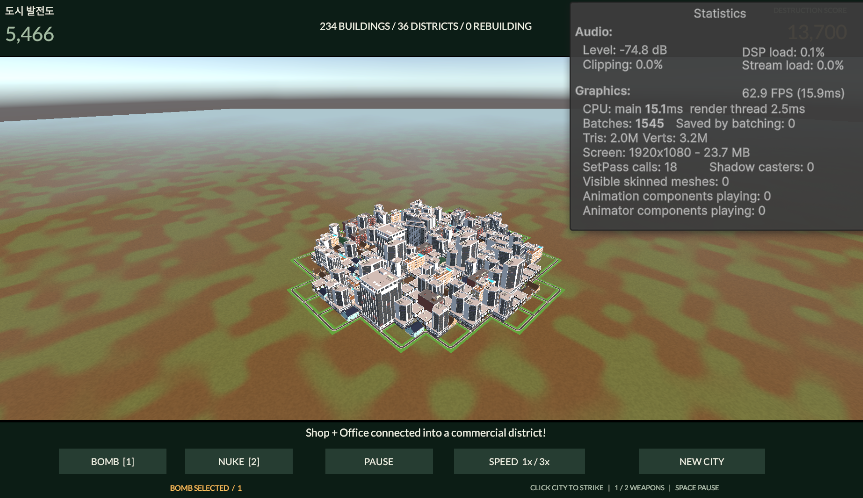

Tracefolio REPORTS & ISSUES
Tracefolio REPORTS & ISSUES진화 도약·발전도 증가 연출과 도로 렌더링 묶음
검증 대기진화 건물의 도약·확대·착지 링과 발전도 카운트·증가 숫자 연출을 추가했습니다. 도로는 별도 사본에서 머테리얼별로 묶습니다. 실제 Play와 성능 수치는 미검증입니다.
작업 결과
조합 진화는 1.1초 동안 도약·최대116% 확대·착지 반동 후 원래 크기로 정착합니다. 발전도는 0.65초 동안 차오르며 +증가량이 1.3초 동안 위로 떠오릅니다. 사용자 정정에 따라 기존 UI 위치는 유지하고 렌더링 부담을 줄이는 도로 메시 묶음을 구현했습니다.
변경 내용
적용 내용
- 진화 건물만 일반 생성과 구분되는 도약·확대·착지 링을 사용합니다. 점수는 현재 발전도로 보간하고 새 증가가 오면 최신 값으로 이어집니다. 감소하면 이전 증가 표시는 해제합니다.
- 증가 Text는 City Prototype 씬에 폰트·색·크기·위치를 직접 저장했습니다. UI 생성·런타임 폰트 대입은 없습니다. 코드는 동적 숫자와 요청된 일시적 연출만 갱신합니다.
- 원본 도로5종의 FBX와 프리팹을 프로젝트 소유 Optimized Roads 폴더에 복사하고 사본의 읽기만 활성화했습니다. FBX 바이트는 원본과 동일합니다. 원본은 변경하지 않았습니다.
- 도로 배치가 바뀔 때만 생성 도로 메시를 머테리얼별 하나로 묶습니다. 애니메이션 건물과 파괴 충돌체는 대상에서 제외하며 이전 합성 메시를 정리합니다. 읽을 수 없는 메시나 비표준 서브메시는 기존 렌더러를 유지합니다.
검증
Unity6000.0.83f1 실제 설치 어셈블리 대상 Runtime·Editor 컴파일 통과. 독립51개 시나리오 통과: 기존47개와 도약 시작/끝 지면, 중간 도약·확대, 최종 크기 복원,1101개 타임라인 샘플의 양수 크기·비음수 높이. 씬125개 오브젝트·253개 로컬 참조·76개 외부 참조·5개 버튼 이벤트 정적 검사 통과. 폰트 글리프와 씬 증가 Text·원래 UI 위치 유지·원본5840개 파일 해시 변경0건을 확인했습니다. 아래는 사용자가 제공한 수정 전 화면입니다. Batches1545·삼각형2.0M으로 표시되어 있습니다. 직접 촬영한 수정 후 화면은 없으며 비교 검증 완료로 처리하지 않습니다. 원본447497바이트 이미지를 편집하지 않고 보존했습니다.

교훈 검토: 모호한 배치 표현을 확인했고 사용자 정정에 따라 UI 위치 변경을 적용하지 않았습니다. 기존 지침으로 충분하여 전역 변경 없음.
남은 사항
실제 Unity Play에서 연출·새 사본 import·도로 메시 합성·화면 표시와 Batches/FPS/메모리의 전후 측정은 미실행입니다. 사용자 컴퓨터 유즈·GUI 실행 금지 조건을 지켰습니다. 메시 묶음은 드로우콜 대상 수정이며 삼각형 수를 줄이는 LOD는 이번 작업에 포함되지 않습니다. 도로 변경 시 합성 CPU 비용도 실제 측정이 필요합니다. 실제 화면 검증·재열기 완료로 보고하지 않습니다.
작업 시간
- 제안 시간: 10~15분
- 실제로 완료된 시간: 시작2026-11-06 19:24:40 KST. 구현·독립 검사 완료 시각은 보고서 생성 시각. 실제 Play 미실행, 공개 배포 확인은 별도.
- XERJ: 미사용 — XERJ 도구 제공 없음 — rg와 현재 소스·에셋·독립 검사로 대체